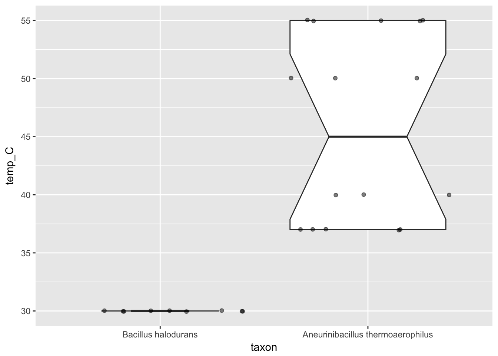

This R package provides a programmatic interface for the Bacterial Diversity Metadatabase of the DSMZ (German Collection of Microorganisms and Cell Cultures). It helps you download full datasets or just their IDs based on reproducible searches against the BacDive Web Service.
Carola Söhngen, Adam Podstawka, Boyke Bunk, Dorothea Gleim, Anna Vetcininova, Lorenz Christian Reimer, Christian Ebeling, Cezar Pendarovski, Jörg Overmann; BacDive – The Bacterial Diversity Metadatabase in 2016, Nucleic Acids Research, Volume 44, Issue D1, 4 January 2016, Pages D581–D585, doi:10.1093/nar/gkv983
Because the BacDive API requires registration please do that first and wait for your access to be granted.
Once you have your login credentials, install BacDiveR from GitHub with:
= signs, save it, then restart R(Studio) or run:In the following examples, the data retrieval will only work if your login credentials are correct in themselves (no typos) and were correctly saved. Console output like "{\"detail\": \"Invalid username/password\"}", or Error: $ operator is invalid for atomic vectors mean that either the login credentials or the .Renviron file are incorrect. Please repeat steps 2 to 4.
The BacDive website lets you easily search for all their strains within a given taxonomic unit. BacDive.DSMZ.de/index.php?search=Bacillus for example a paginated list of strains that you can then access, download and analyse further. All manual, though. BacDiveR automates this workflow:
library(BacDiveR)
taxon_1 <- "Bacillus halodurans"
Bac_IDs <- retrieve_data(searchTerm = taxon_1)
head(Bac_IDs)
#> [1] 1112 1113 1114 1115 1116 1117Calling retrieve_data() with just a searchTerm results in a vector of numeric BacDive IDs. You can use such ID downloads for meta-analyses of different bacterial taxons such as comparisons of taxon sizes, as they are represented in the DSMZ’s collection.
In order to analyse the actual datasets, we now need to download them. Suppose
we want to compare the optimal growth temperatures of strains from the taxon Bacillus halodurans with another one. You can obtain that data of course by feeding the ID vector obtained above into self-made loops that calls retrieve_data(…, searchType = "bacdive_id").
However, you can save yourself some time and effort by activating the parameter force_taxon_download. This will get you all taxon data in a single (albeit large) list of dataframes. Feel free to take a break while the computers do some work for you:
taxon_2 <- "Aneurinibacillus thermoaerophilus"
Bac_data <- retrieve_data(taxon_1, force_taxon_download = TRUE)
#> Data download in progress for BacDive-IDs: 1112 1113 1114 1115 1116 1117
#> 1118 1119 23692 23693 23694 23695 23696 23697 23698 23699 23700 23701
At_data <- retrieve_data(taxon_2, force_taxon_download = TRUE)
#> Data download in progress for BacDive-IDs: 11385 11386 11387 11388 11389
#> 11390 11391 11392 11393 11394 11395 11396 11397 11398 11399We wanted the growth temperatures, right? As with any other database field, you now need to determine its path within the list data structure that BacDiveR returned to you. Use either
Environment > Data viever, orstr(Bac_data), orto find the $-marked path to the field of your interest. In our example, it’s $culture_growth_condition$culture_temp$temp, which we’ll now use to extract that field from all entries in our downloaded datasets.
Multiple steps are necessary here, which could easily result in hardly readable code if we used the regular assignment operator <-, intermediate variables and nested function calls. We will avoid this with the pipe operator %>%. It indicates that
Note the ~ .x prepended to the path $culture_growth_condition$culture_temp$temp! This is map()’s way of indicating that each element in the piped-in dataset will be accessed at that path.
library(magrittr)
extract_temps <- function(dataset, taxon_name) {
dataset %>%
purrr::map(~.x$culture_growth_condition$culture_temp$temp) %>%
unlist() %>%
as.numeric() %>%
data.frame(temp_C = ., taxon = rep(taxon_name, length(.))) %>%
return()
}
temperature_Bac <- extract_temps(Bac_data, taxon_1)
temperature_At <- extract_temps(At_data, taxon_2) Before visualising the data, we need to create a dataframe of the two datasets.
library("ggplot2")
rbind(temperature_Bac, temperature_At) %>%
ggplot(aes(x = taxon, y = temp_C)) +
geom_boxplot(notch = TRUE, varwidth = TRUE) +
geom_jitter(height = 0.05, alpha = 0.5) +
theme(legend.position = "none")
And thus we find, that Aneurinibacillus thermoaerophilus contains strains with different growth optima (note the groups of data points), even up to the 50-something-°C-range as the thermo-part in its name suggest). On the other hand, all Bacillus halodurans strains known to BacDive were found to grow best at the lower temperature of NA°C. Thanks to the notch in Aneurinibacillus thermoaerophilus’s box, we can also say that there is a significant difference between the temperature ranges of these two taxons, even before digging into the numbers:
BacDiveR helps you download BacDive data for investigating it offline. Use ?retrieve_data to learn more about its options.